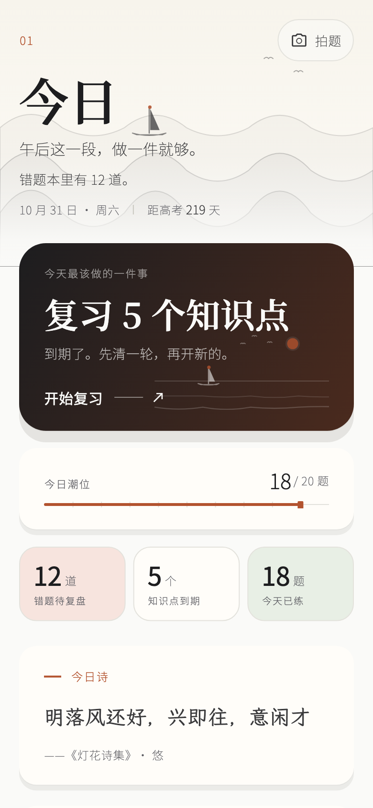
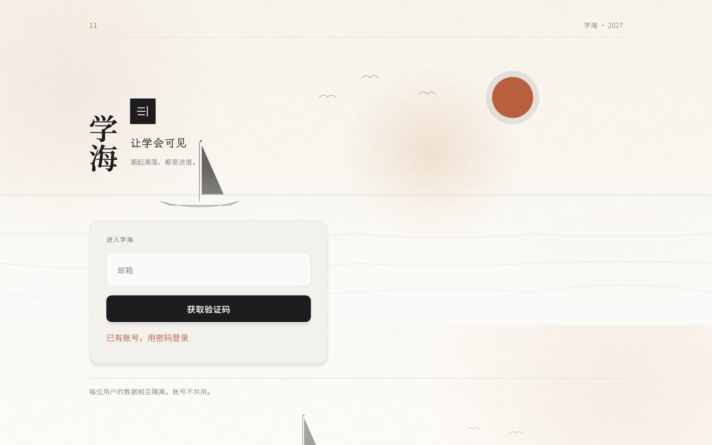

高考学习系统 · 3.0.0 · 设计语言「墨潮」
学海
把「判不出来」
和「答错」分开。
判不出的题，不再算你错。这一次，界面像一间有光的屋子——四时天光、八景墨潮、六科纸色。
macOS · 97 MB2026-10-31 · 构建 35预览版 · 应用内测中


这一版改的不是界面
是「一整天」
3.0 只做三件事：让纸浮起来、让画面活起来、让每一次打开都有新东西。其余的都是这三件事的余波。
四时，一整天
清晨、午后、黄昏、夜深，四套天光由真实时间驱动。壳层与主视觉页才有世界，内容页仍是纸底——阅读的对比度优先。
一叠纸，不是一个网页
232 宽玻璃侧栏、14px 缝、24 圆角浮起纸页。⌘K 命令面板 13 个目的地，回车开第一条，ESC 关。
八景画在纸上
晨潮、夜航、书山、灯塔、渡海、三道潮、芦苇、印。纯代码绘制，共享同一条潮位线，一景只有一个赭陶点。
一天的第一眼，是一张有光的纸
今日页只回答一个问题：现在，先做哪一件。上面只有一个主行动，做完这一件再谈别的。错题本里的 12 道、到期的 5 个知识点、今天练过的 18 题，都是本机算出来的。
- 墨色主卡只给「今天最该做的一件事」，不抢第二次注意力。
- 「今日潮位」用一条赭线读进度，18/20 题写得清清楚楚。
- 三块科目纸色是统计，不是装饰：wash 只做背景面。

答对 · 答错 · 还有「判不出来」
判不出的题，
不再算你错
2.5 及以前，主观题判不出会被写成 false，这条错数据一路喂给 BKT 与推荐，越算越偏。
3.0 仍是三态：判不出的题不再算你错，也不再进推荐。每次作答留一条不可变事件——来源、指纹、时间戳，本地追加、按账号隔离、可导出 JSONL。

答对
判得出，就是答对
记入正确、计入掌握度与积分；下一次复习按遗忘曲线排期。
答错
答错，进错题本
标出错因、自动收集同邻知识点同类题；练习页显示状态与来源，不静默失败。
存疑
判不出，标待判定
不算错、不进 BKT、不进推荐。解题页、复习页都写着「待判定」，等核对后再算。
这条规则写进了代码，也写在条款里
一条作答，一条不可变记录。来源、指纹、时间戳；本地追加、按账号隔离，可导出 JSONL。判分状态后来变了，记录不改变——你看到的那条记录，就是真实发生过的那一次。
真跑出来的
26 屏，108 张
没有一张是画的
无头渲染、日/夜、390 与 1280 两种尺寸。点开可看原图；主题切到夜读，它们会换成夜里的那一版。





题库、知识库、阅读册，都是自有内容
76,794 题的统一题库、按章节组织的知识库、英语阅读一百篇，各有独立真源；这个页面只引用，不改写。写作与做题记录只存在本机，导出由你决定。
- 题库
- 76,794 题 · qid 全库唯一
- 3.0 数据包
- 33,639 题 · 材料 / 考点 / 难度 / 推荐分
- 知识库
- 按学科与章节组织，与题库同一条真源管道
- 答疑笔
- 另一条独立硬件产品线，不计入本软件版本号
- 来源与权利
- 题目与答案来自公开数据与真题整理；有异议走应用内反馈
设计语言「墨潮」
同一片海，八种时刻
以及六种 8% 的纸色
八景共享一条潮位线与三层墨，一景只有一个赭陶点。纸色只做背景面：一屏 ≤12%，同屏最多两种。


六科 wash
wash 只做背景面：章节标记、统计块底、成就徽章面。文字永远用墨与灰，对比度日间 ≥7:1、夜读 ≥4.5:1。
一屏的色面配比
纸 70–85% ／ 墨 5–15% ／ 赭 ≤5% ／ wash ≤12%。超配即回退，不加第二强调色。
还差什么
版本号能写的，
只有已经跑通的部分
下面这些还没做到，不藏在页面深处。写到能写了，再改这一页。
看当前分发范围当前是 3.0.0 预览版：只出 macOS，备案与资质未办，公开预览。Windows / 安卓 / iOS 停在 2.6.0。
- 题库解析缺 12,619 条，解析完整率 62.5%——历史最重的一笔。
- 题型分类未分类 10,096 条，占 30.0%；认知层级整列缺失。
- 分发范围3.0 目前只出 macOS；四端恢复需要明令。
- 合规手机号登录、在线 PK、备案与资质未做。
- 拍照搜题走云端 OCR 与云端题库检索，不是端侧 PP-OCRv5。
- 真机玻璃、暖影、插画在 Retina / P3 / 移动端的观感与掉帧未实测。
现在可以装
学海 3.0.0
「墨潮」
macOS · 97 MB · 2026-10-31 · 构建 35。装上就是四时世界、⌘K 命令面板和一整天的光。
拖进「应用程序」
双击打开 dmg，把窗口里的「学海」拖到 Applications 文件夹。之后运行的是拖出来的副本，磁盘映像可以推出。
被拦下就右键打开
在「应用程序」里右键（或按住 Control）点「学海」，选「打开」。在对话框里再点一次「打开」——这是 macOS 对非 App Store 来源应用的默认拦截。
登录后进今日页
打开后应用会先问邮箱；完成后落到今日页：今天的潮位、最该做的一件事、以及暗下来会变化的天光。